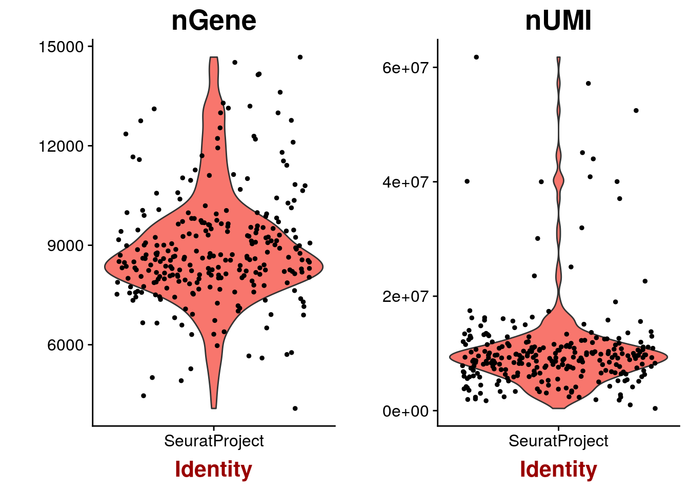
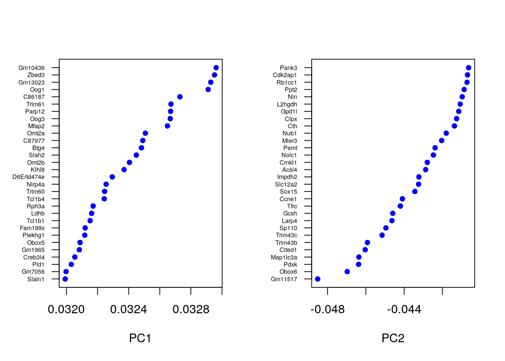
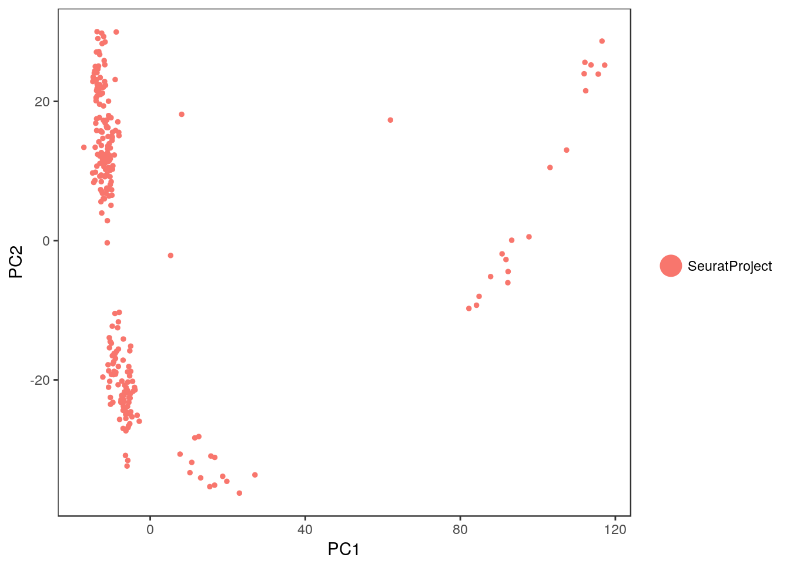
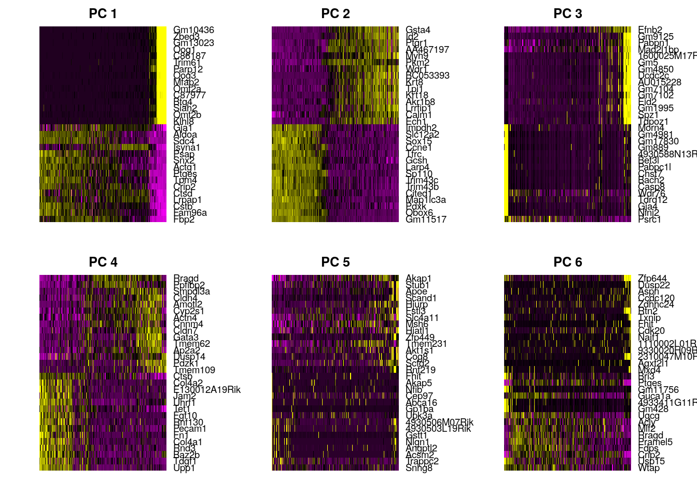
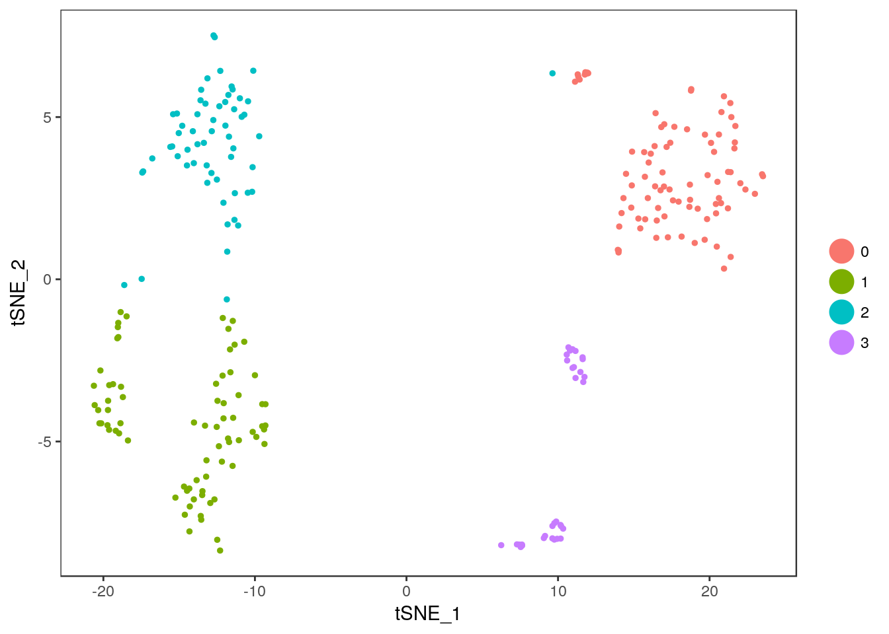
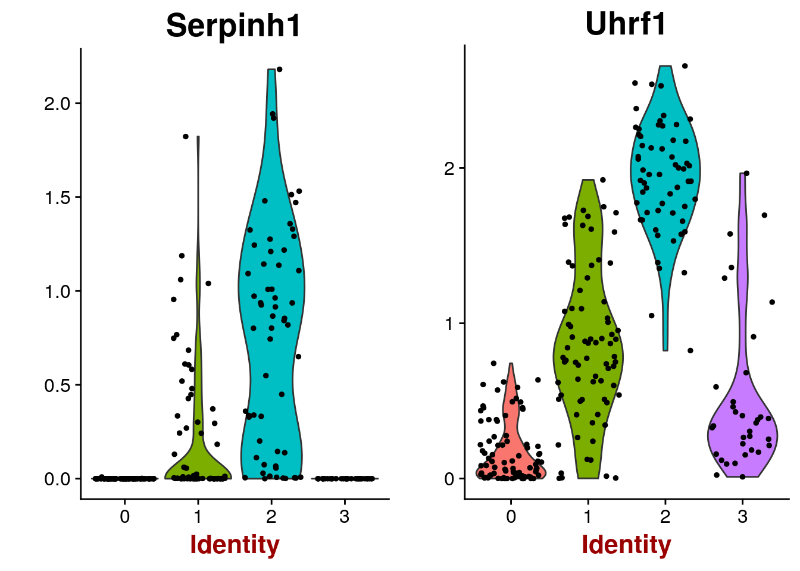

5 Seurat
Seurat was originally developed as a clustering tool for scRNA-seq data, however in the last few years the focus of the package has become less specific and at the moment seurat is a popular R package that can perform QC, analysis, and exploration of scRNA-seq data, i.e. many of the tasks covered in this course. Although the authors provide several tutorials, here we provide a brief overview by following an example created by the authors of Seurat (2,800 Peripheral Blood Mononuclear Cells). We mostly use default values in various function calls, for more details please consult the documentation and the authors. We start by loading the Deng data that we have used before:
deng <- readRDS("deng/deng-reads.rds")5.1 seurat object class
Seurat does not integrate SingleCellExperiment Bioconductor class described above, but instead introduces its own object class - seurat. All calculations in this chapter are performed on an object of this class. To begin the analysis we first need to initialize the object with the raw (non-normalized) data. We will keep all genes expressed in \(>= 3\) cells and all cells with at least 200 detected genes:
library(SingleCellExperiment)
library(Seurat)
library(mclust)
library(dplyr)
seuset <- CreateSeuratObject(
raw.data = counts(deng),
min.cells = 3,
min.genes = 200
)5.2 Expression QC
Seurat allows you to easily explore QC metrics and filter cells based on any user-defined criteria. We can visualize gene and molecule counts and plot their relationship:
VlnPlot(
object = seuset,
features.plot = c("nGene", "nUMI"),
nCol = 2
)
GenePlot(
object = seuset,
gene1 = "nUMI",
gene2 = "nGene"
)
Now we will exclude cells with a clear outlier number of read counts:
seuset <- FilterCells(
object = seuset,
subset.names = c("nUMI"),
high.thresholds = c(2e7)
)5.3 Normalization
After removing unwanted cells from the dataset, the next step is to normalize the data. By default, we employ a global-scaling normalization method LogNormalize that normalizes the gene expression measurements for each cell by the total expression, multiplies this by a scale factor (10,000 by default), and log-transforms the result:
seuset <- NormalizeData(
object = seuset,
normalization.method = "LogNormalize",
scale.factor = 10000
)5.4 Highly variable genes
Seurat calculates highly variable genes and focuses on these for downstream analysis. FindVariableGenes calculates the average expression and dispersion for each gene, places these genes into bins, and then calculates a z-score for dispersion within each bin. This helps control for the relationship between variability and average expression:
seuset <- FindVariableGenes(
object = seuset,
mean.function = ExpMean,
dispersion.function = LogVMR,
x.low.cutoff = 0.0125,
x.high.cutoff = 3,
y.cutoff = 0.5
)
length(x = seuset@var.genes)## [1] 61275.5 Dealing with confounders
To mitigate the effect of confounding factors, Seurat constructs linear models to predict gene expression based on user-defined variables. The scaled z-scored residuals of these models are stored in the scale.data slot, and are used for dimensionality reduction and clustering.
Seurat can regress out cell-cell variation in gene expression driven by batch, cell alignment rate (as provided by Drop-seq tools for Drop-seq data), the number of detected molecules, mitochondrial gene expression and cell cycle. Here we regress on the number of detected molecules per cell.
seuset <- ScaleData(
object = seuset,
vars.to.regress = c("nUMI")
)## [1] "Regressing out nUMI"
##
|
| | 0%
|
|= | 1%
|
|= | 2%
|
|== | 2%
|
|== | 3%
|
|== | 4%
|
|=== | 4%
|
|=== | 5%
|
|==== | 6%
|
|===== | 7%
|
|===== | 8%
|
|====== | 8%
|
|====== | 9%
|
|====== | 10%
|
|======= | 10%
|
|======= | 11%
|
|======= | 12%
|
|======== | 12%
|
|======== | 13%
|
|========= | 14%
|
|========== | 15%
|
|========== | 16%
|
|=========== | 16%
|
|=========== | 17%
|
|=========== | 18%
|
|============ | 18%
|
|============ | 19%
|
|============= | 20%
|
|============== | 21%
|
|============== | 22%
|
|=============== | 22%
|
|=============== | 23%
|
|=============== | 24%
|
|================ | 24%
|
|================ | 25%
|
|================= | 26%
|
|================== | 27%
|
|================== | 28%
|
|=================== | 28%
|
|=================== | 29%
|
|=================== | 30%
|
|==================== | 30%
|
|==================== | 31%
|
|==================== | 32%
|
|===================== | 32%
|
|===================== | 33%
|
|====================== | 34%
|
|======================= | 35%
|
|======================= | 36%
|
|======================== | 36%
|
|======================== | 37%
|
|======================== | 38%
|
|========================= | 38%
|
|========================= | 39%
|
|========================== | 40%
|
|=========================== | 41%
|
|=========================== | 42%
|
|============================ | 42%
|
|============================ | 43%
|
|============================ | 44%
|
|============================= | 44%
|
|============================= | 45%
|
|============================== | 46%
|
|=============================== | 47%
|
|=============================== | 48%
|
|================================ | 48%
|
|================================ | 49%
|
|================================ | 50%
|
|================================= | 50%
|
|================================= | 51%
|
|================================= | 52%
|
|================================== | 52%
|
|================================== | 53%
|
|=================================== | 54%
|
|==================================== | 55%
|
|==================================== | 56%
|
|===================================== | 56%
|
|===================================== | 57%
|
|===================================== | 58%
|
|====================================== | 58%
|
|====================================== | 59%
|
|======================================= | 60%
|
|======================================== | 61%
|
|======================================== | 62%
|
|========================================= | 62%
|
|========================================= | 63%
|
|========================================= | 64%
|
|========================================== | 64%
|
|========================================== | 65%
|
|=========================================== | 66%
|
|============================================ | 67%
|
|============================================ | 68%
|
|============================================= | 68%
|
|============================================= | 69%
|
|============================================= | 70%
|
|============================================== | 70%
|
|============================================== | 71%
|
|============================================== | 72%
|
|=============================================== | 72%
|
|=============================================== | 73%
|
|================================================ | 74%
|
|================================================= | 75%
|
|================================================= | 76%
|
|================================================== | 76%
|
|================================================== | 77%
|
|================================================== | 78%
|
|=================================================== | 78%
|
|=================================================== | 79%
|
|==================================================== | 80%
|
|===================================================== | 81%
|
|===================================================== | 82%
|
|====================================================== | 82%
|
|====================================================== | 83%
|
|====================================================== | 84%
|
|======================================================= | 84%
|
|======================================================= | 85%
|
|======================================================== | 86%
|
|========================================================= | 87%
|
|========================================================= | 88%
|
|========================================================== | 88%
|
|========================================================== | 89%
|
|========================================================== | 90%
|
|=========================================================== | 90%
|
|=========================================================== | 91%
|
|=========================================================== | 92%
|
|============================================================ | 92%
|
|============================================================ | 93%
|
|============================================================= | 94%
|
|============================================================== | 95%
|
|============================================================== | 96%
|
|=============================================================== | 96%
|
|=============================================================== | 97%
|
|=============================================================== | 98%
|
|================================================================ | 98%
|
|================================================================ | 99%
|
|=================================================================| 100%
## [1] "Scaling data matrix"
##
|
| | 0%
|
|=================================================================| 100%5.6 Linear dimensionality reduction
Next we perform PCA on the scaled data. By default, the genes in object@var.genes are used as input, but can be alternatively defined using pc.genes. Running dimensionality reduction on highly variable genes can improve performance. However, with some types of data (UMI) - particularly after regressing out technical variables, PCA returns similar (albeit slower) results when run on much larger subsets of genes, including the whole transcriptome.
seuset <- RunPCA(
object = seuset,
pc.genes = seuset@var.genes,
do.print = TRUE,
pcs.print = 1:5,
genes.print = 5
)## [1] "PC1"
## [1] "Fbp2" "Fam96a" "Cstb" "Lrpap1" "Ctsd"
## [1] ""
## [1] "Gm10436" "Zbed3" "Gm13023" "Oog1" "C86187"
## [1] ""
## [1] ""
## [1] "PC2"
## [1] "Gm11517" "Obox6" "Pdxk" "Map1lc3a" "Cited1"
## [1] ""
## [1] "Gsta4" "Id2" "Ptgr1" "AA467197" "Myh9"
## [1] ""
## [1] ""
## [1] "PC3"
## [1] "Psrc1" "Ninj2" "Gja4" "Tdrd12" "Wdr76"
## [1] ""
## [1] "Efnb2" "Gm9125" "Pabpn1" "Mad2l1bp"
## [5] "1600025M17Rik"
## [1] ""
## [1] ""
## [1] "PC4"
## [1] "Upp1" "Tdgf1" "Baz2b" "Rnd3" "Col4a1"
## [1] ""
## [1] "Rragd" "Ppfibp2" "Smpdl3a" "Cldn4" "Amotl2"
## [1] ""
## [1] ""
## [1] "PC5"
## [1] "Snhg8" "Trappc2" "Acsm2" "Angptl2" "Nlgn1"
## [1] ""
## [1] "Akap1" "Stub1" "Apoe" "Scand1" "Hjurp"
## [1] ""
## [1] ""Seurat provides several useful ways of visualizing both cells and genes that define the PCA:
PrintPCA(object = seuset, pcs.print = 1:5, genes.print = 5, use.full = FALSE)## [1] "PC1"
## [1] "Fbp2" "Fam96a" "Cstb" "Lrpap1" "Ctsd"
## [1] ""
## [1] "Gm10436" "Zbed3" "Gm13023" "Oog1" "C86187"
## [1] ""
## [1] ""
## [1] "PC2"
## [1] "Gm11517" "Obox6" "Pdxk" "Map1lc3a" "Cited1"
## [1] ""
## [1] "Gsta4" "Id2" "Ptgr1" "AA467197" "Myh9"
## [1] ""
## [1] ""
## [1] "PC3"
## [1] "Psrc1" "Ninj2" "Gja4" "Tdrd12" "Wdr76"
## [1] ""
## [1] "Efnb2" "Gm9125" "Pabpn1" "Mad2l1bp"
## [5] "1600025M17Rik"
## [1] ""
## [1] ""
## [1] "PC4"
## [1] "Upp1" "Tdgf1" "Baz2b" "Rnd3" "Col4a1"
## [1] ""
## [1] "Rragd" "Ppfibp2" "Smpdl3a" "Cldn4" "Amotl2"
## [1] ""
## [1] ""
## [1] "PC5"
## [1] "Snhg8" "Trappc2" "Acsm2" "Angptl2" "Nlgn1"
## [1] ""
## [1] "Akap1" "Stub1" "Apoe" "Scand1" "Hjurp"
## [1] ""
## [1] ""VizPCA(object = seuset, pcs.use = 1:2)
PCAPlot(object = seuset, dim.1 = 1, dim.2 = 2)
In particular, PCHeatmap allows for easy exploration of the primary sources of heterogeneity in a dataset, and can be useful when trying to decide which PCs to include for further downstream analyses. Both cells and genes are ordered according to their PCA scores. Setting cells.use to a number plots the extreme cells on both ends of the spectrum, which dramatically speeds plotting for large datasets:
PCHeatmap(
object = seuset,
pc.use = 1:6,
cells.use = 500,
do.balanced = TRUE,
label.columns = FALSE,
use.full = FALSE
)
5.7 Significant PCs
To overcome the extensive technical noise in any single gene for scRNA-seq data, Seurat clusters cells based on their PCA scores, with each PC essentially representing a metagene that combines information across a correlated gene set. Determining how many PCs to include downstream is therefore an important step. Seurat randomly permute a subset of the data (1% by default) and rerun PCA, constructing a null distribution of gene scores, and repeat this procedure. We identify significant PCs as those who have a strong enrichment of low p-value genes:
seuset <- JackStraw(
object = seuset,
num.replicate = 100,
do.print = FALSE
)The JackStrawPlot function provides a visualization tool for comparing the distribution of p-values for each PC with a uniform distribution (dashed line). Significant PCs will show a strong enrichment of genes with low p-values (solid curve above the dashed line). In this case it appears that PCs 1-8 are significant.
JackStrawPlot(object = seuset, PCs = 1:9)## Warning: Removed 39410 rows containing missing values (geom_point).
A more ad hoc method for determining which PCs to use is to look at a plot of the standard deviations of the principle components and draw your cutoff where there is a clear elbow in the graph. This can be done with PCElbowPlot. In this example, it looks like the elbow would fall around PC 5.
PCElbowPlot(object = seuset)
5.8 Clustering cells
Seurat implements an graph-based clustering approach. Distances between the cells are calculated based on previously identified PCs. Seurat approach was heavily inspired by recent manuscripts which applied graph-based clustering approaches to scRNA-seq data - SNN-Cliq ((C. Xu and Su 2015)) and CyTOF data - PhenoGraph ((Levine et al. 2015)). Briefly, these methods embed cells in a graph structure - for example a K-nearest neighbor (KNN) graph, with edges drawn between cells with similar gene expression patterns, and then attempt to partition this graph into highly interconnected quasi-cliques or communities. As in PhenoGraph, we first construct a KNN graph based on the euclidean distance in PCA space, and refine the edge weights between any two cells based on the shared overlap in their local neighborhoods (Jaccard distance). To cluster the cells, we apply modularity optimization techniques - SLM ((Blondel et al. 2008)), to iteratively group cells together, with the goal of optimizing the standard modularity function.
The FindClusters function implements the procedure, and contains a resolution parameter that sets the granularity of the downstream clustering, with increased values leading to a greater number of clusters. We find that setting this parameter between \(0.6-1.2\) typically returns good results for single cell datasets of around \(3,000\) cells. Optimal resolution often increases for larger datasets. The clusters are saved in the object@ident slot.
seuset <- FindClusters(
object = seuset,
reduction.type = "pca",
dims.use = 1:8,
resolution = 1.0,
print.output = 0,
save.SNN = TRUE
)A useful feature in Seurat is the ability to recall the parameters that were used in the latest function calls for commonly used functions. For FindClusters, there is the function PrintFindClustersParams to print a nicely formatted summary of the parameters that were chosen:
PrintFindClustersParams(object = seuset)## Parameters used in latest FindClusters calculation run on: 2017-10-28 18:41:46
## =============================================================================
## Resolution: 1
## -----------------------------------------------------------------------------
## Modularity Function Algorithm n.start n.iter
## 1 1 100 10
## -----------------------------------------------------------------------------
## Reduction used k.param k.scale prune.SNN
## pca 30 25 0.0667
## -----------------------------------------------------------------------------
## Dims used in calculation
## =============================================================================
## 1 2 3 4 5 6 7 8We can look at the clustering results and compare them to the original cell labels:
table(seuset@ident)##
## 0 1 2 3
## 85 75 59 34adjustedRandIndex(colData(deng)[seuset@cell.names, ]$cell_type2, seuset@ident)## [1] 0.3981315Seurat also utilises tSNE plot to visulise clustering results. As input to the tSNE, we suggest using the same PCs as input to the clustering analysis, although computing the tSNE based on scaled gene expression is also supported using the genes.use argument.
seuset <- RunTSNE(
object = seuset,
dims.use = 1:8,
do.fast = TRUE
)
TSNEPlot(object = seuset)
5.9 Marker genes
Seurat can help you find markers that define clusters via differential expression. By default, it identifes positive and negative markers of a single cluster, compared to all other cells. You can test groups of clusters vs. each other, or against all cells. For example, to find marker genes for cluster 2 we can run:
markers2 <- FindMarkers(seuset, 2)Marker genes can then be visualised:
VlnPlot(object = seuset, features.plot = rownames(markers2)[1:2])
FeaturePlot(
seuset,
head(rownames(markers2)),
cols.use = c("lightgrey", "blue"),
nCol = 3
)
FindAllMarkers automates this process and find markers for all clusters:
markers <- FindAllMarkers(
object = seuset,
only.pos = TRUE,
min.pct = 0.25,
thresh.use = 0.25
)DoHeatmap generates an expression heatmap for given cells and genes. In this case, we are plotting the top 10 markers (or all markers if less than 20) for each cluster:
top10 <- markers %>% group_by(cluster) %>% top_n(10, avg_logFC)
DoHeatmap(
object = seuset,
genes.use = top10$gene,
slim.col.label = TRUE,
remove.key = TRUE
)
Exercise: Compare marker genes provided by Seurat and SC3.
5.10 sessionInfo()
## R version 3.4.2 (2017-09-28)
## Platform: x86_64-pc-linux-gnu (64-bit)
## Running under: Debian GNU/Linux 9 (stretch)
##
## Matrix products: default
## BLAS/LAPACK: /usr/lib/libopenblasp-r0.2.19.so
##
## locale:
## [1] LC_CTYPE=en_US.UTF-8 LC_NUMERIC=C
## [3] LC_TIME=en_US.UTF-8 LC_COLLATE=en_US.UTF-8
## [5] LC_MONETARY=en_US.UTF-8 LC_MESSAGES=C
## [7] LC_PAPER=en_US.UTF-8 LC_NAME=C
## [9] LC_ADDRESS=C LC_TELEPHONE=C
## [11] LC_MEASUREMENT=en_US.UTF-8 LC_IDENTIFICATION=C
##
## attached base packages:
## [1] parallel stats4 methods stats graphics grDevices utils
## [8] datasets base
##
## other attached packages:
## [1] bindrcpp_0.2 dplyr_0.7.4
## [3] mclust_5.3 Seurat_2.1.0
## [5] Matrix_1.2-7.1 cowplot_0.8.0
## [7] ggplot2_2.2.1 SingleCellExperiment_0.99.4
## [9] SummarizedExperiment_1.6.5 DelayedArray_0.2.7
## [11] matrixStats_0.52.2 Biobase_2.36.2
## [13] GenomicRanges_1.28.6 GenomeInfoDb_1.12.3
## [15] IRanges_2.10.5 S4Vectors_0.14.7
## [17] BiocGenerics_0.22.1 knitr_1.17
##
## loaded via a namespace (and not attached):
## [1] backports_1.1.1 Hmisc_4.0-3
## [3] VGAM_1.0-4 NMF_0.20.6
## [5] sn_1.5-0 plyr_1.8.4
## [7] igraph_1.1.2 lazyeval_0.2.0
## [9] splines_3.4.2 gridBase_0.4-7
## [11] digest_0.6.12 foreach_1.4.3
## [13] htmltools_0.3.6 lars_1.2
## [15] gdata_2.18.0 magrittr_1.5
## [17] checkmate_1.8.5 cluster_2.0.6
## [19] doParallel_1.0.11 mixtools_1.1.0
## [21] ROCR_1.0-7 sfsmisc_1.1-1
## [23] recipes_0.1.0 gower_0.1.2
## [25] dimRed_0.1.0 R.utils_2.5.0
## [27] colorspace_1.3-2 RCurl_1.95-4.8
## [29] bindr_0.1 survival_2.40-1
## [31] iterators_1.0.8 ape_4.1
## [33] glue_1.1.1 DRR_0.0.2
## [35] registry_0.3 gtable_0.2.0
## [37] ipred_0.9-6 zlibbioc_1.22.0
## [39] XVector_0.16.0 kernlab_0.9-25
## [41] ddalpha_1.3.1 prabclus_2.2-6
## [43] DEoptimR_1.0-8 scales_0.5.0
## [45] mvtnorm_1.0-6 rngtools_1.2.4
## [47] Rcpp_0.12.13 dtw_1.18-1
## [49] xtable_1.8-2 htmlTable_1.9
## [51] tclust_1.3-1 foreign_0.8-67
## [53] proxy_0.4-17 SDMTools_1.1-221
## [55] Formula_1.2-2 tsne_0.1-3
## [57] lava_1.5.1 prodlim_1.6.1
## [59] htmlwidgets_0.9 FNN_1.1
## [61] gplots_3.0.1 RColorBrewer_1.1-2
## [63] fpc_2.1-10 acepack_1.4.1
## [65] modeltools_0.2-21 ica_1.0-1
## [67] pkgconfig_2.0.1 R.methodsS3_1.7.1
## [69] flexmix_2.3-14 nnet_7.3-12
## [71] caret_6.0-77 labeling_0.3
## [73] rlang_0.1.2 reshape2_1.4.2
## [75] munsell_0.4.3 tools_3.4.2
## [77] ranger_0.8.0 ggridges_0.4.1
## [79] evaluate_0.10.1 stringr_1.2.0
## [81] yaml_2.1.14 ModelMetrics_1.1.0
## [83] robustbase_0.92-7 caTools_1.17.1
## [85] purrr_0.2.4 pbapply_1.3-3
## [87] nlme_3.1-129 R.oo_1.21.0
## [89] RcppRoll_0.2.2 compiler_3.4.2
## [91] ggjoy_0.4.0 tibble_1.3.4
## [93] stringi_1.1.5 lattice_0.20-34
## [95] trimcluster_0.1-2 diffusionMap_1.1-0
## [97] data.table_1.10.4-3 bitops_1.0-6
## [99] irlba_2.3.1 R6_2.2.2
## [101] latticeExtra_0.6-28 bookdown_0.5
## [103] KernSmooth_2.23-15 gridExtra_2.3
## [105] codetools_0.2-15 MASS_7.3-45
## [107] gtools_3.5.0 assertthat_0.2.0
## [109] CVST_0.2-1 pkgmaker_0.22
## [111] rprojroot_1.2 withr_2.0.0
## [113] mnormt_1.5-5 GenomeInfoDbData_0.99.0
## [115] diptest_0.75-7 grid_3.4.2
## [117] rpart_4.1-10 timeDate_3012.100
## [119] tidyr_0.7.2 class_7.3-14
## [121] rmarkdown_1.6 segmented_0.5-2.2
## [123] Rtsne_0.13 numDeriv_2016.8-1
## [125] scatterplot3d_0.3-40 lubridate_1.6.0
## [127] base64enc_0.1-3References
Xu, Chen, and Zhengchang Su. 2015. “Identification of Cell Types from Single-Cell Transcriptomes Using a Novel Clustering Method.” Bioinformatics, 11~feb.
Levine, Jacob H, Erin F Simonds, Sean C Bendall, Kara L Davis, El-Ad D Amir, Michelle D Tadmor, Oren Litvin, et al. 2015. “Data-Driven Phenotypic Dissection of AML Reveals Progenitor-Like Cells That Correlate with Prognosis.” Cell 162 (1): 184–97.
Blondel, Vincent D, Jean-Loup Guillaume, Renaud Lambiotte, and Etienne Lefebvre. 2008. “Fast Unfolding of Communities in Large Networks.” J. Stat. Mech. 2008 (10). IOP Publishing: P10008.